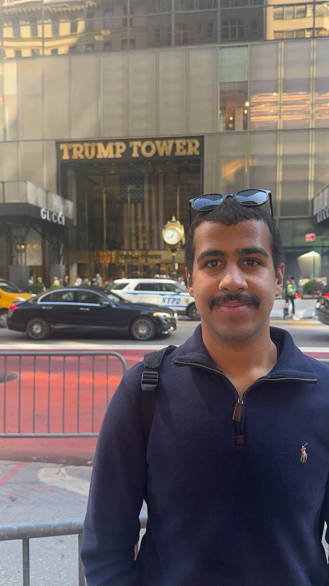
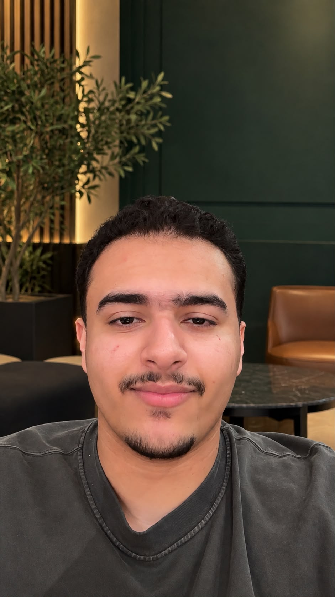
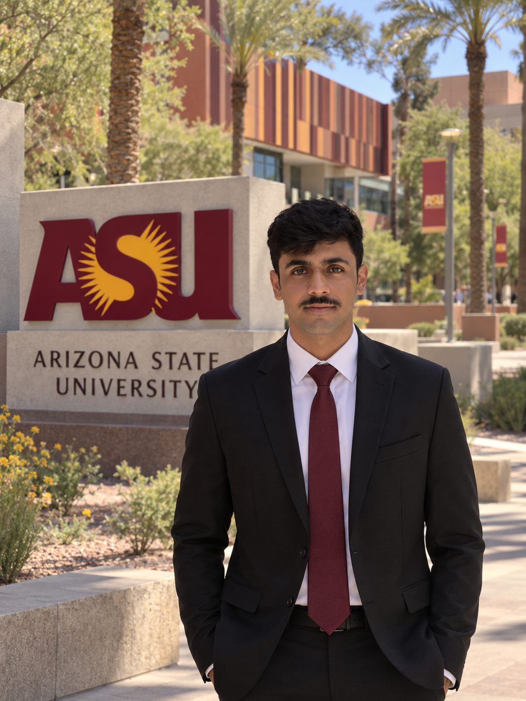
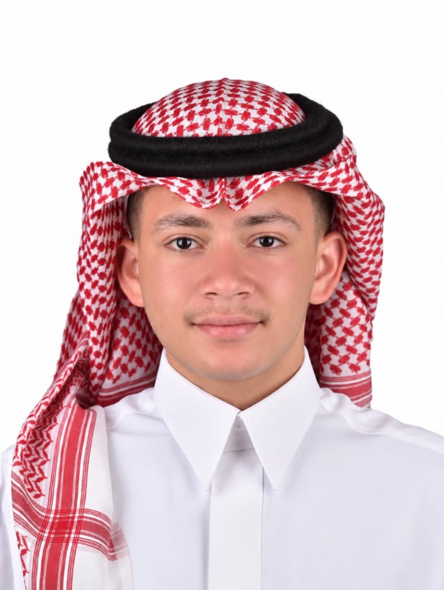
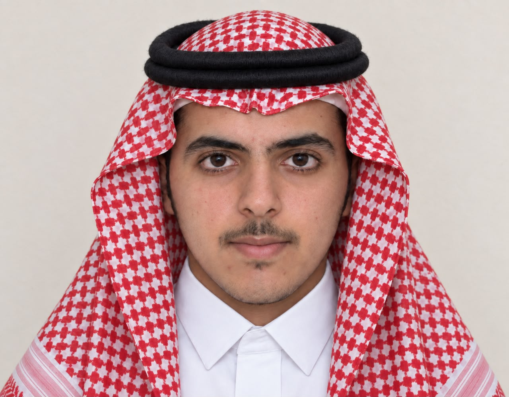

Ahmed M R A Albaloul
Proposed Partnership Coordinator
The student creators of Campus Food Connect. Responsibilities below are proposed roles for the organization.

Proposed Partnership Coordinator

Proposed Volunteer Coordinator

Proposed Project Director

Proposed Research Coordinator

Proposed Communications Coordinator